Agent Harness Engineering全景综述，决定Agent系统的上限
一、背景
Agent Harness Engineering：大模型LLM的全栈基础设施层，包含执行环境、工具协议、上下文管理、编排调度、可观测性、验证评估、安全治理七大模块。
简单公式：Agent= LLM + Harness Engineering
核心结论：生产环境中智能体可靠性，由Harness框架决定，而非大模型本身。仅优化Harness、不改动模型权重，就能让基准任务提升10倍编码成绩、13.7%终端基准得分，远超模型迭代2%-4%的常规增益。
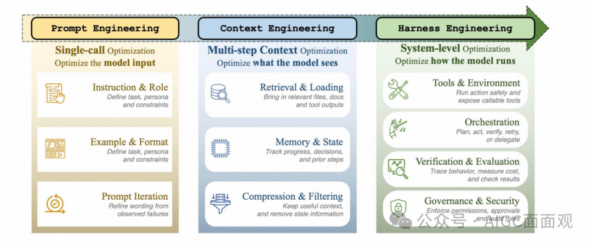
提示工程、上下文工程和Harness工程的简要对比
三大核心贡献
- 约束条件，模型上的 Harness：长周期智能体任务中，基准性能差异源于Harness而非模型，Harness是独立且决定上限的系统层。
- ETCLOVG七层分类法：首创七层架构，将可观测性、治理升级为独立一级层级（突破传统六层框架局限）。
- 生态实证：映射170+开源Agent项目，绘制行业生态图谱，明确技术空白与主流设计原则。
二、智能体系统的三个阶段
预备知识
- 智能体定义公式：
大模型仅负责推理，Harness承载状态记忆、工具执行、终止条件、故障恢复所有工程能力。
- 性能增益公式：
Harness优化带来5%-100%提升，模型迭代仅2%-4%
1. 三阶段迭代模型（2022-2026）
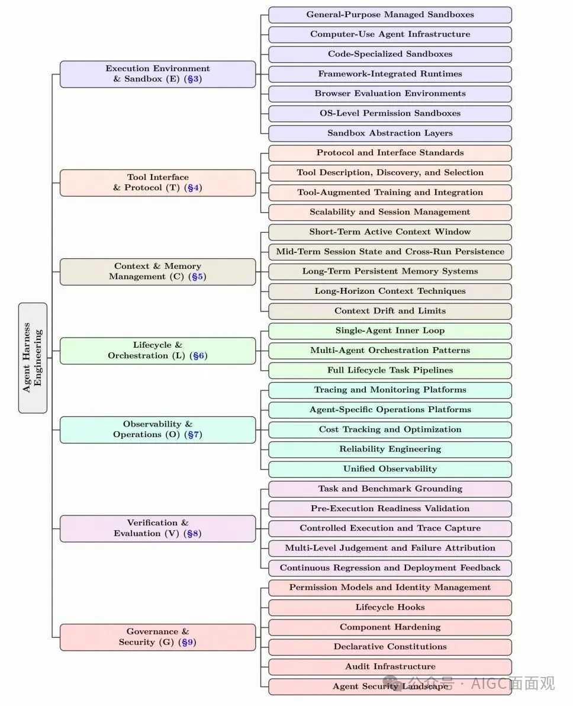
2022 年至 2026 年代表性 agent-harness 系统时间线。该时间线展示了从早期单循环 agent 到更丰富的 harness 基础设施 的演进，涵盖执行环境、工具接口、上下文与内存管理、生命周期编排、可观测性、验证和治理。
- 时间维度：2022（ReAct）→2023（多智能体）→2025（Harness转向）；
- 演进特征：从简陋While循环 → 多智能体协调 → 框架决定性能；
- 里程碑：2026年OpenAI/Meta/LangChain验证Harness核心价值。
| 阶段 | 时间 | 核心命题 | 优化范围 | 工程层级 |
|---|---|---|---|---|
| 提示工程 Prompt Engineering | 2022-2024 | 模型单次输入是什么 | 仅优化单轮Prompt文本 | 单点输入优化 |
| 上下文工程 Context Engineering | 2025 | 模型每一步该看什么 | 多轮信息流动态管理 | 多步状态优化 |
| 线束工程 Harness Engineering | 2026 | 模型如何稳定可靠运行 | 七层全栈跨层整合 | 系统级工程优化 |
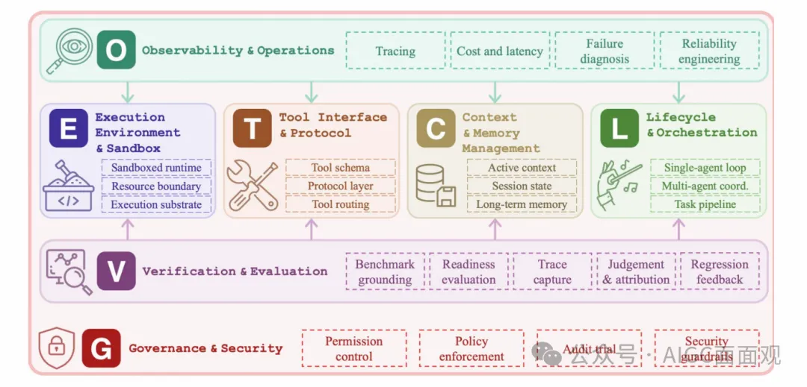
基于 LLM 的智能体系统之 Harness 工程分类示意图。E、T、C、L 四层构成系统的结构支柱；O 层提供系统级监控；V 层 对各组件进行评估与反馈；G 层在整个系统上实施治理与安全约束。配色对应 ETCLOVG 七层
2.ETCLOVG七层架构

智能体Harness工程分类法的细节。每个分支对应一个 ETCLOVG 层及其主要子类别
每层拆解子类别，覆盖170+开源项目映射，清晰看出：
- 密集区：执行/工具/编排/验证；
- 薄弱区：可观测性、治理（开源少、商业闭源为主）；
- 空白区：任务运行器、多智能体编排、规范驱动工具。
ETCLOVG 七层拆分，分为核心四层（运行底座）+ 控制三层（管控平面）
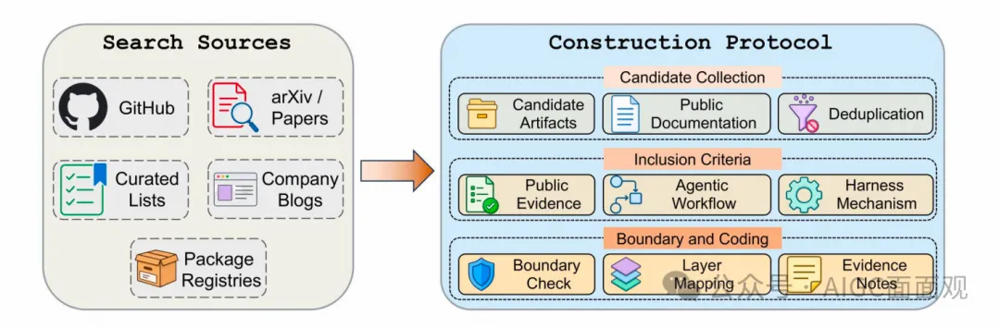
：语料库构建流程。候选工作从 GitHub、论文、精选列表、包注册表以及公司工程资源中收集，随后进行去重、依据纳入标准检查，并利用公开文档映射到 ETCLOVG 层。
- 职责：Agent运行载体、隔离防护、环境重置；细分7大类沙箱（通用托管/代码专用/浏览器环境等）。
- E-Execution 执行环境与沙箱
核心价值：解决安全逃逸、可复现性、长任务自主权限问题。
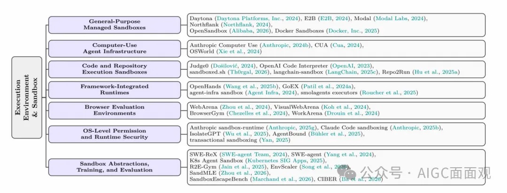
关于 LLM 智能体执行环境与sandbox的代表性工作
- 职责：工具描述、发现、调用、跨Agent通信；核心协议MCP/A2A/OpenAPI。
- T-Tool 工具接口与协议
关键原则：少而精的工具集优于冗余堆砌，减少规划误差与Token消耗。
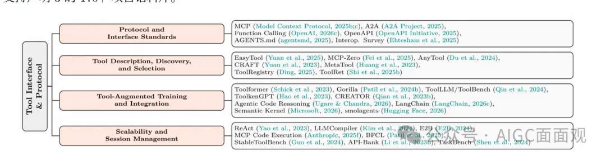
关于 LLM 智能体工具接口与协议的代表性工作
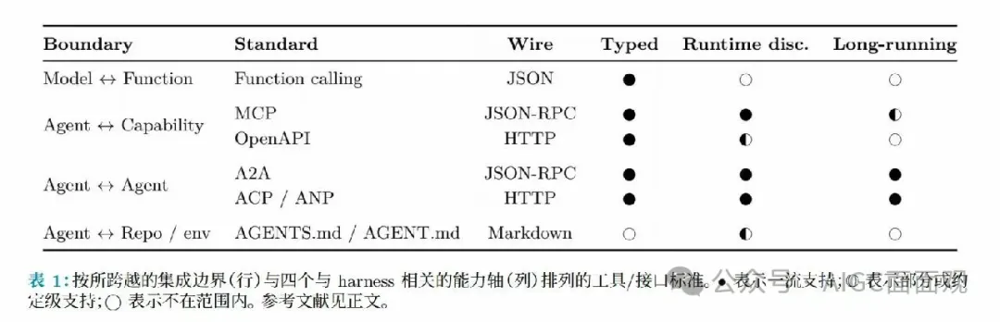
- 职责：管控模型每一步可见信息，分短期窗口/会话中期/长期记忆三级架构；
- C-Context 上下文与内存管理
核心痛点：解决上下文膨胀、信息U型衰减、上下文漂移三大行业难题。
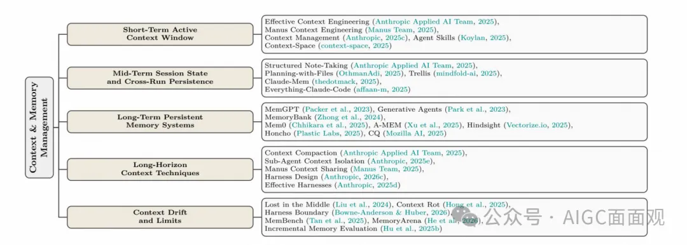
关于 LLM 智能体上下文与记忆管理的代表性工作
- 职责：单智能体循环、多智能体协作、全任务流水线； 主流模式：层级编排/团队协作/图组合/扇出并行。
- L-Lifecycle 生命周期与编排
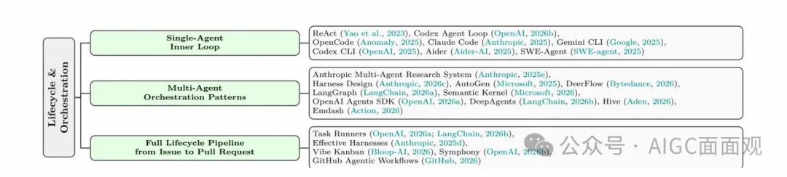
按本章编排类别整理的关于 LLM 智能体生命周期与编排的代表性工作
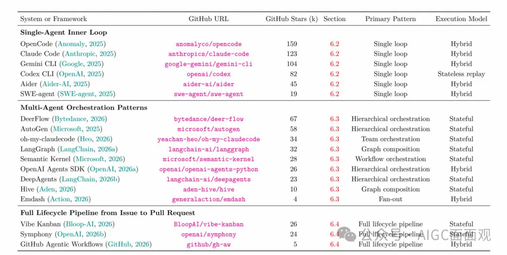
：代表性编排系统，按编排层级（单智能体：多智能体：全生命周期流水线：主要编排模式和执行模型分类。GitHub 星数四舍五入到千位，截至 2026 年 5 月 12 日记录
- 职责：链路追踪、成本监控、故障归因、可靠性工程； 生态：基于OpenTelemetry标准，代表工具Langfuse/Arize。
- O-Observability 可观测性与运维
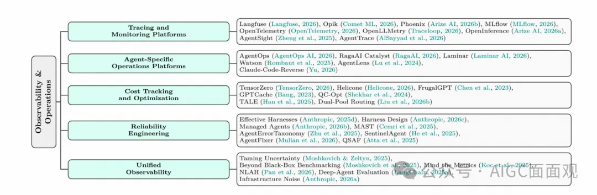
按本章操作类别整理的关于 LLM 智能体可观测性与运维的代表性工作
- 独创五阶段任务反馈生命周期：基准确立→执行就绪→轨迹捕获→多级评判→回归优化； 突破：不只看最终得分，更看执行路径、故障溯源。
- V-Verification 验证与评估
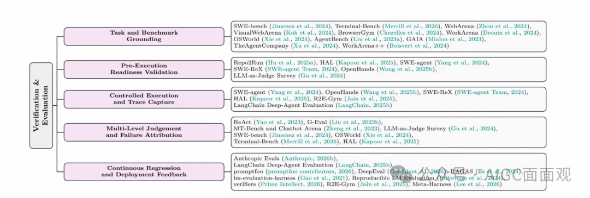
按本章“任务-反馈”生命周期组织的、面向 LLM 智能体验证与评估的代表性工作
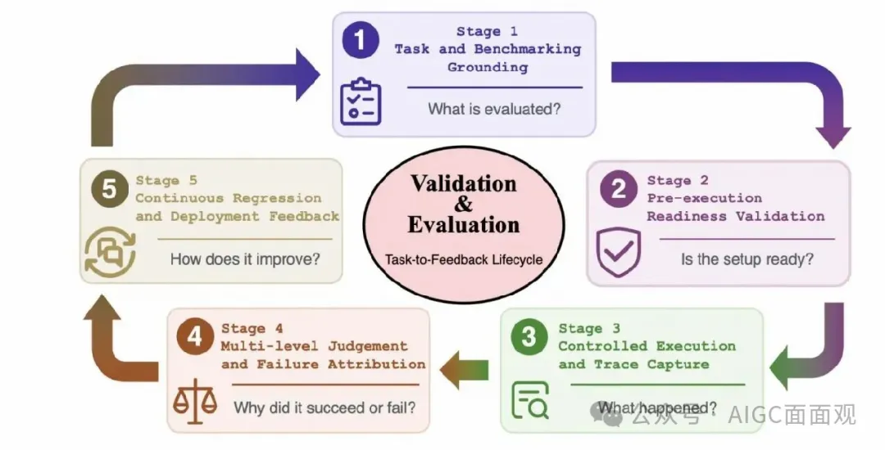
：用于工具评估的任务-反馈生命周期。第 V 节将验证与评估组织为一个五阶段的质量控制循环：任务与基准的根基确立、 执行前的就绪验证、受控执行与追踪捕获、多层次判断与失败归因，以及持续回归与部署反馈。该图强调，工具评估不仅应报告最 终成功率，还应诊断失败根源，并将所得证据反馈到系统性的工具改进中
- 职责：权限管控、生命周期钩子、组件加固、审计合规、声明式宪章； 三层防护：模型级/系统级/组织级安全约束。
- G-Governance 治理与安全
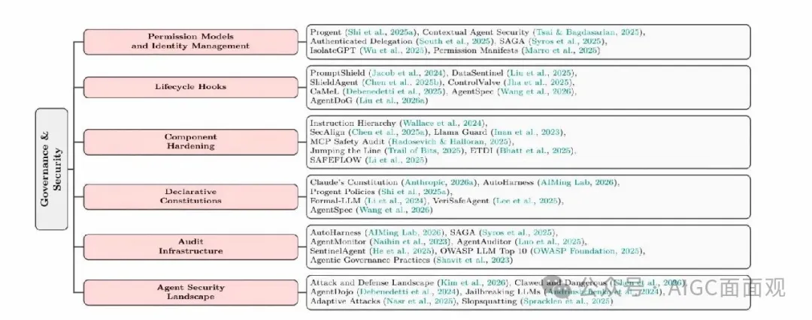
：按本章安全类别整理的关于 LLM 智能体治理与安全的代表性工作
LLM输入前、工具调用前、执行后、人工介入四拦截点，构成事前-事中-事后全治理闭环，是安全护栏核心设计范式。
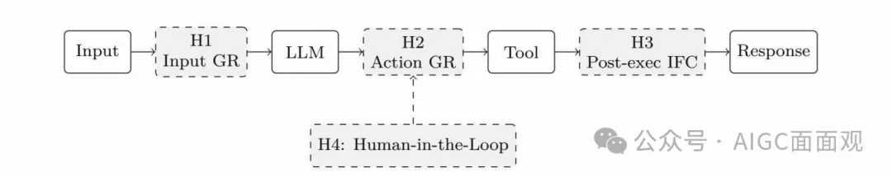
生命周期钩子,一个工具使用周期中的四个钩子点。实线框表示代理组件；虚线框表示治理钩子。H1 在输入到达 LLM 之前进行验证，H2 在工具执行前验证拟议操作，H3 调解工具输出回流到上下文的信息流，H4 在用户批准前拦截具有重大影响的行动
2. 架构逻辑
- E/T/C/L：系统结构支柱，保障Agent能跑起来；
- O/V/G：独立控制平面，保障Agent跑得稳、可管控、可审计；
- 设计创新：首次把可观测性、治理从附属钩子升级为独立层级，匹配企业真实组织分工。
3. 关键逻辑
- 三层包含关系：Harness包含上下文工程，上下文工程包含提示工程，并非替代关系；
- 演进本质：从单次文本优化 → 多轮信息管控 → 全生命周期系统治理；
- 行业拐点：2026年OpenAI正式定义Harness为独立学科，标志行业从「调Prompt」进入「搭Harness」时代。
4. 论文关键观点
- 成本-质量-速度三元悖论更强安全/更全观测/更深入评估 → 成本升高、速度下降；生产级需做分层取舍，非全量拉满。
- 能力-控制权衡工具越多、能力越强 → 攻击面越大、失控风险越高；需通过权限沙箱、动态约束平衡。
- 框架耦合问题Harness七层相互关联，单层优化会连锁影响全局，局部改动需全链路回归测试。
未来方向
- 执行环境加固：沙箱逃逸防御、跨平台可移植性；
- 长任务状态维护：解决上下文漂移、记忆失真；
- 轨迹故障诊断：从打分到根因自动定位；
- 跨角色标准交接：Agent/工具/人类任务流转协议；
- 模型与框架自适应简化：模型升级后自动裁剪冗余Harness约束。
参考
Agent Harness Engineering: A Survey